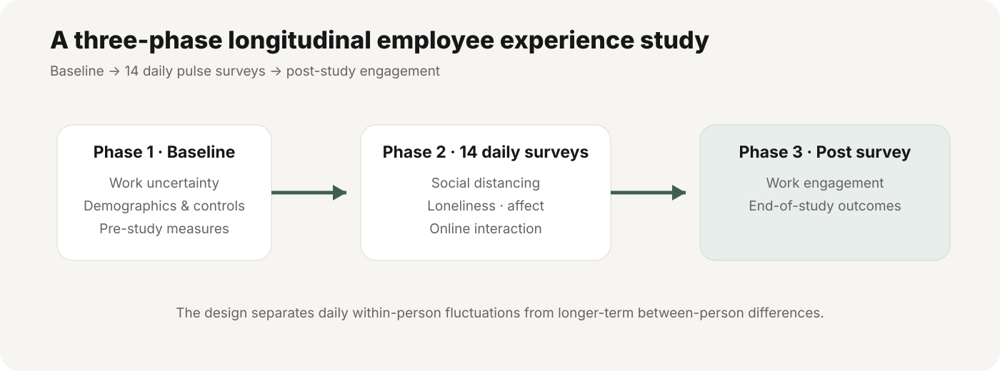
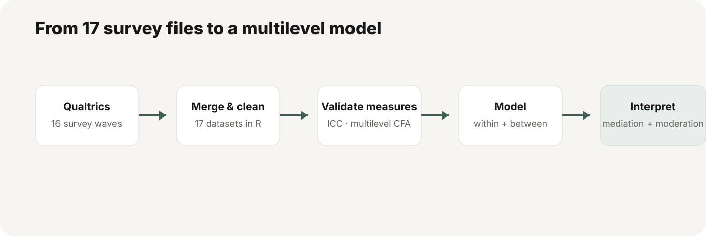
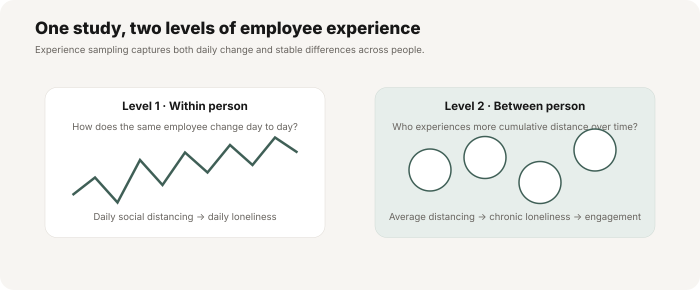
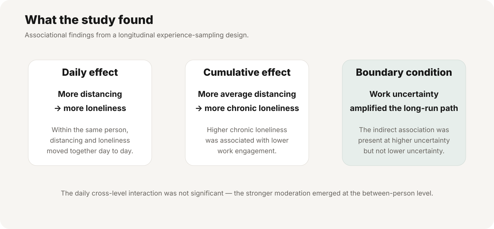

01 / DAILY EXPERIENCE
Distancing and loneliness fluctuated together
On days when an employee reported more distancing than usual, they also reported more loneliness.
I designed and led a three-phase study to investigate how daily social distancing and work uncertainty related to loneliness and subsequent work engagement.
A one-time survey would hide the difference between a difficult day and persistent loneliness. I designed repeated measurement to study both patterns and examine the role of work uncertainty.

Three phases make it possible to connect daily experience with later reported engagement, while distinguishing within-person from between-person variation.
On days when an employee reported more distancing than usual, they also reported more loneliness.
Higher average distancing was associated with higher average loneliness; higher average loneliness was associated with lower subsequent work engagement.
Work uncertainty strengthened the between-person distancing–loneliness association, but not the daily association.
The study distinguished within-person and between-person associations. Work uncertainty moderated the between-person association but not the daily association. These findings do not establish causal effects.
The results suggest questions that organizational leaders could investigate when evaluating employee experience. The following are prospective recommendations derived from the findings, not actions taken by a partner organization or outcomes established by this study.
If an organization wants to understand persistent loneliness, consider assessing how experiences vary over time rather than relying exclusively on a single cross-sectional snapshot.
Based on the study's distinction between daily and between-person associations.
Explore whether employees facing higher work uncertainty may need different types of support; determine needs directly before selecting interventions.
Based on the observed between-person moderation; not evidence that support would improve engagement.
If an organization introduces a response to loneliness or uncertainty, assess its effectiveness through a prospective evaluation rather than treating these correlational results as causal evidence.
This is a methodological recommendation, not an intervention tested in the project.
A probability-based Nebraska panel formed the sampling frame. Baseline and follow-up surveys bracketed 14 daily Qualtrics surveys. The Bureau of Sociological Research supported recruitment, IRB logistics, survey deployment, and participant compensation.
I merged and checked 17 datasets, assessed nonresponse bias, variance decomposition, and measurement validity, and estimated multilevel mediation and moderation models with covariates and a lagged loneliness control.



Work uncertainty did not significantly moderate the daily distancing–loneliness association, but did moderate the between-person association. The indirect association with engagement was observed at higher—not lower—work uncertainty.
The observational design does not establish causality. Any proposed organizational intervention would require additional evaluation. Results should not be presented as evidence of implemented business changes.